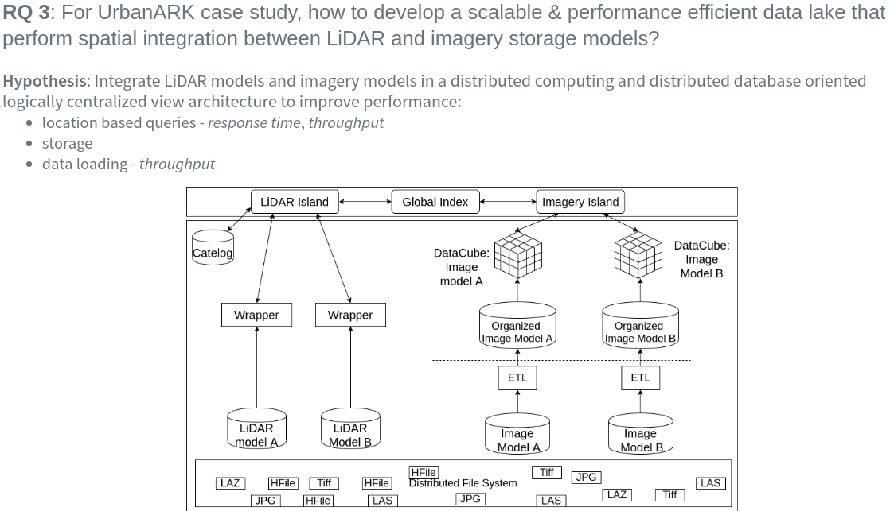
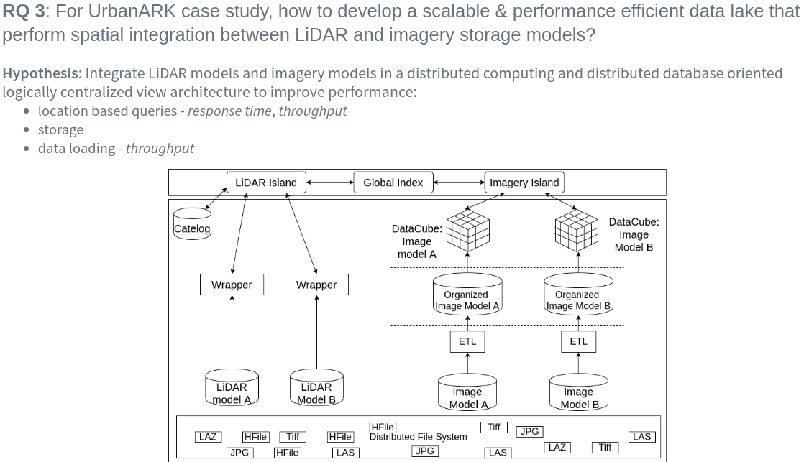
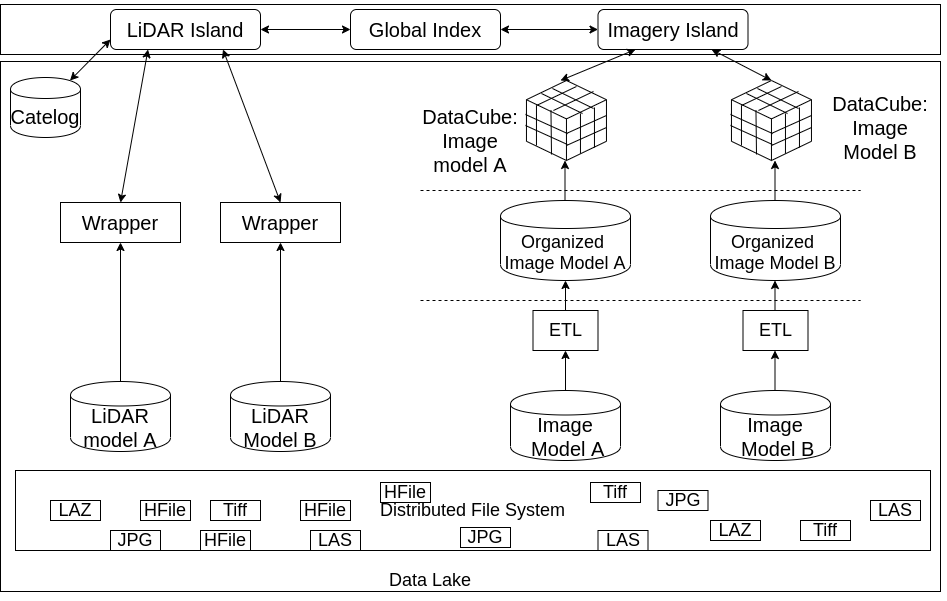

Scalable Data Systems for LiDAR and Imagery
Data Integration
PhD Stage-2 Transfer Assesment
Chamin Nalinda
 Primary supervisor:
Primary supervisor:Dr. Michela Bertolotto
Secondary supervisor:
Dr. Nhien-An Le-Khac


Background

Gaps
- No comparable systems exist.
- Most integrated systems are imagery systems. (Lewis2017 et al. (2017), Giuliani2017 et al. (2017), Baumann et al. (2016))
- Existing point cloud and imagery systems are not spatially integrated. (Whitby et al. (2017), Baumann et al. (2017))
- Poor scalability of most LiDAR systems. (Liu et al. (2018), VanOosterom et al. (2018), Meyer et al. (2019))
- "Data lake" & "Polystore" systems not well developed topics.
“How to enable efficient access to spatially integrated LiDAR and imagery data in a scalable manner?”
Research Questions


 

Research Questions
-
How to construct a global level spatial index, in a distributed environment, atop local indexes of LiDAR and imagery data that are being managed in distributed storage environments? (RQ1)
Hypothesis: Develop a multi-database oriented, global level index atop local indexes of LiDAR and image databases. -
How to define an efficient integrated data system architecture to perform scalable spatial integration of LiDAR and imagery models in distributed environment(s) (RQ2)
Hypothesis: Analyse logically centralized view (e.g. DataLake) and logically de-centralized view architectures (e.g. Polystores) in terms of scaling, storage models, computing paradigms, and requirements/objectives etc. -
For UrbanARK case study, how to develop a scalable & performance efficient data lake that perform spatial integration between LiDAR and imagery storage models? (RQ3)
Hypothesis : Integrate LiDAR models and imagery models in a distributed computing and distributed database oriented logically centralized view architecture to improve performance:- location based queries - response time, throughput
- storage
- data loading - throughput
Research Questions
-
RQ1: How to construct a global level spatial index, in a distributed environment, atop local indexes of LiDAR and imagery data that are being managed in distributed storage environments?
Hypothesis: Develop a multi-database oriented, global level index atop local indexes of LiDAR and image databases

-
RQ 2: How to define an efficient integrated data system architecture to perform scalable spatial integration of LiDAR and imagery models in distributed environment(s)?
Hypothesis: Analyse logically centralized view (e.g. DataLake) and logically de-centralized view architectures (e.g. Polystores) in terms of scaling, storage models, computing paradigms, and requirements/objectives etc.

-
RQ 3: For UrbanARK case study, how to develop a scalable & performance efficient data lake that perform spatial integration between LiDAR and imagery storage models?
Hypothesis: Integrate LiDAR models and imagery models in a distributed computing and distributed database oriented logically centralized view architecture to improve performance:- location based queries - response time, throughput
- storage
- data loading - throughput
Progress to Date
1. 30 credits ☑
- ▶ HPC (A-)
- ▶ Big Data Programming (A-)
2. Literature Survey ☑
- ▶ Paper 1 :
- ▶ Paper 2 :
3. RQ 1: Global index

Progress to Date
4. RQ 2: Architecture
- ▶ RO 2.1 : Framework (in additional slides)
- ▶ RO 2.2: UrbanARK ☑
5. RQ 3: Data Lake
- ▶ RO 3.1 : Integration
- images are geo-referenced ☑
- meta-data repository ☑
- integration tests are planned

5. RQ 3: Data Lake (contd)
- ▶ RO 3.2 : Performance
- IEEE BigData (2019)
- ISPRS Congress 2020

Future Plan
- Continue Literature
- RO 1.4 - evaluate global index
- RO 2.1 - complete conceptual framework
- All objectives of RQ 3
- Publications

Additional slides
Targeted venues
- ISPRS Congress - The top conference on remote sensing data management.
- 3D GeoInfo - One of the top conference on 3D data management.
- Remote Sensing of Environment (Elsevier) - Impact factor (2019): 9.085. The most prestigious journal to publish research on remote sensing
- ISPRS Journal of Photogrammetry and Remote sensing (Elsevier) - Impact Factor (2019): 7.319
- International Journal of Digital Earth (Taylor & Francis) - Impact Factor (2019): 3.097
RQ 2: Framework